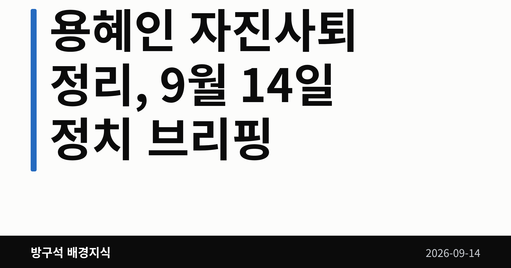
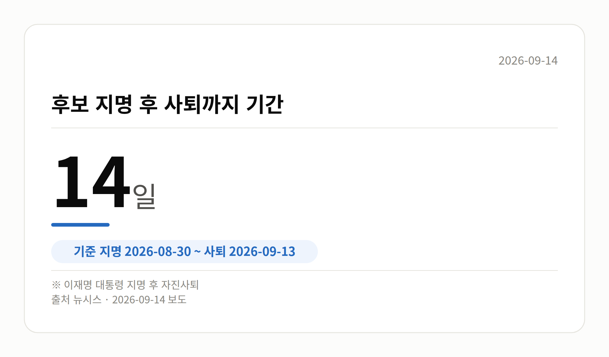

이 글은 2026년 9월 14일 기준으로 정리한 내용입니다.
용혜인 자진사퇴 소식이 13일 나왔습니다. 성평등가족부 장관 후보자 자리에서 스스로 물러난 것으로, 지명 14일 만입니다.
인사청문회는 열리지 않은 채 절차가 끝났고, 이제 새 후보 지명 절차가 남았습니다. 오늘 글은 이 사안을 중심으로 정리해 보겠습니다.
용혜인 후보자는 13일 국회 소통관에서 기자회견을 열고 후보직에서 물러났습니다. 이재명 대통령이 지난달 30일 지명한 뒤 딱 2주 만입니다.
배우자 및 기본소득당을 둘러싼 의혹, 비례대표 의원직 겸직 논란이 이어지던 상황이었습니다. 여기서 '의혹'은 아직 사실로 확인된 단계가 아니라는 뜻입니다.
| 항목 | 내용 |
|---|---|
| 지명일 | 2026년 8월 30일 |
| 사퇴일 | 2026년 9월 13일 |
| 경과 | 14일 |

용 후보자는 "지금 여기서 멈추는 게 민주당과 기본소득당, 민주 진보 진영 내 연대정신을 이어나가는 데 필요하다고 판단했다"고 말했습니다.
이어 "소수정당의 어려운 형편을 조롱하고 폄하하는 국민의힘 의원들의 행태와 반론권조차 보장하지 않은 일부 언론들의 악의적인 왜곡 보도가 이어졌다"며 "국민의힘이 끝내 인사청문회 일정 잡기를 거부했다"고 했습니다.
국민의힘 측이 청문회 일정을 잡지 않은 사유나, 제기된 의혹의 사실관계에 대한 반박 입장은 제공된 자료에서 확인되지 않았습니다. 한쪽 발언만 있다는 점을 감안해 읽어 주시면 좋겠습니다.
민주당 쪽 설명도 나왔습니다. 김민석 대표 비서실장인 김태선 의원은 페이스북에 "비례대표 겸직 문제가 법적 위반은 아닐지라도, 국민적 눈높이와 정서에 온전히 부합하지 못한 면이 있었다"며 김 대표의 자진 사퇴 권유를 전달했다고 적었습니다.
기본소득당은 "어제 전달받았다. 민주당 지도부 측으로부터 의견을 전해받은 것"이라고 밝혔습니다.
장관 후보자가 사퇴하면 인선은 원점으로 돌아갑니다. 제기됐던 의혹들은 인사청문회를 거치지 않은 채 마무리됐습니다.
다음 일정은 15일 김승원 법무부 장관 후보자 인사청문회입니다. 야당은 '코로나19 신약 임상시험 승인 청탁 의혹'을 제기하고 있고, 김민석 대표는 11일 "지켜보면 지켜볼수록 잘된 인사라고 판단된다"고 말했습니다.
국회의원 발의 법률안 222건. 가장 최근은 미등기 사정토지 정비를 위한 특별법안(박균택의원 등 10인).
이번 주 등록된 선거 여론조사 13건
열린국회정보·중앙선거여론조사심의위원회 자료를 직접 셌습니다. 여론조사의 자세한 사항은 중앙선거여론조사심의위원회 홈페이지를 참조하세요.
여러분은 장관 후보자 검증이 청문회 전에 끝나는 지금 방식을 어떻게 보고 계신가요?
댓글로 알려 주시면 다음 글에 반영하겠습니다.